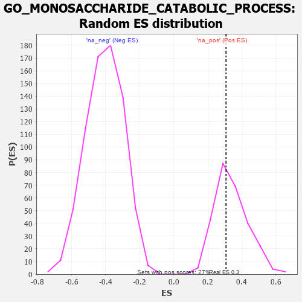

| | | Dataset | 7d |
| Phenotype | NoPhenotypeAvailable |
| Upregulated in class | na_pos |
| GeneSet | GO_MONOSACCHARIDE_CATABOLIC_PROCESS |
| Enrichment Score (ES) | 0.3072526 |
| Normalized Enrichment Score (NES) | 0.9041832 |
| Nominal p-value | 0.5882353 |
| FDR q-value | 0.8400475 |
| FWER p-Value | 1.0 |
Table: GSEA Results Summary
 Fig 1: Enrichment plot: GO_MONOSACCHARIDE_CATABOLIC_PROCESS
Fig 1: Enrichment plot: GO_MONOSACCHARIDE_CATABOLIC_PROCESS
Profile of the Running ES Score & Positions of GeneSet Members on the Rank Ordered List
| PROBE | GENE SYMBOL | GENE_TITLE | RANK IN GENE LIST | RANK METRIC SCORE | RUNNING ES | CORE ENRICHMENT | | 1 | GLB1 | | | 125 | 1.416 | 0.1851 | Yes |
| 2 | FOXK2 | | | 1081 | 0.467 | 0.1312 | Yes |
| 3 | GALM | | | 1258 | 0.437 | 0.1711 | Yes |
| 4 | GALT | | | 1363 | 0.416 | 0.2171 | Yes |
| 5 | RPE | | | 1425 | 0.405 | 0.2669 | Yes |
| 6 | LRP5 | | | 1769 | 0.342 | 0.2723 | Yes |
| 7 | FOXK1 | | | 1859 | 0.326 | 0.3073 | Yes |
| 8 | TIGAR | | | 3091 | 0.138 | 0.1720 | No |
| 9 | FUT8 | | | 3551 | 0.067 | 0.1238 | No |
| 10 | CRYL1 | | | 4300 | -0.060 | 0.0382 | No |
| 11 | ADPGK | | | 4567 | -0.109 | 0.0202 | No |
| 12 | DCXR | | | 4766 | -0.151 | 0.0167 | No |
| 13 | XYLB | | | 4811 | -0.160 | 0.0339 | No |
| 14 | DHDH | | | 4876 | -0.172 | 0.0503 | No |
| 15 | ACTN3 | | | 5486 | -0.315 | 0.0183 | No |
| 16 | GALE | | | 5567 | -0.338 | 0.0562 | No |
| 17 | PGM1 | | | 5593 | -0.342 | 0.1016 | No |
| 18 | TKFC | | | 5854 | -0.419 | 0.1283 | No |
| 19 | GALK1 | | | 5953 | -0.455 | 0.1805 | No |
| 20 | PGM2 | | | 6137 | -0.515 | 0.2306 | No |
Table: GSEA details [plain text format]

Fig 2: GO_MONOSACCHARIDE_CATABOLIC_PROCESS: Random ES distribution
Gene set null distribution of ES for GO_MONOSACCHARIDE_CATABOLIC_PROCESS